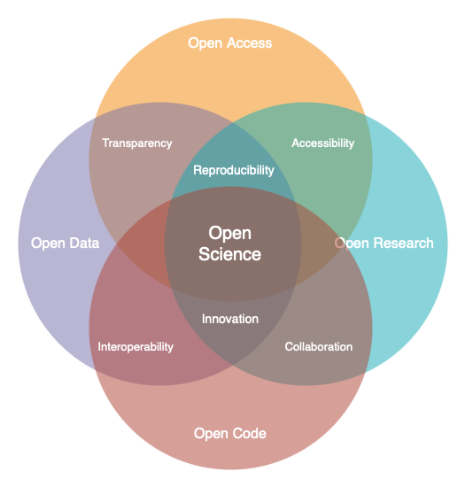
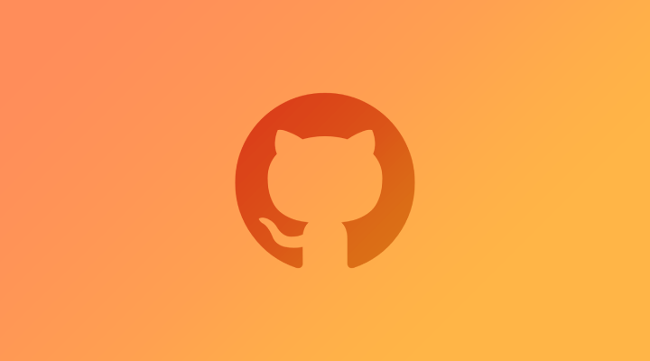
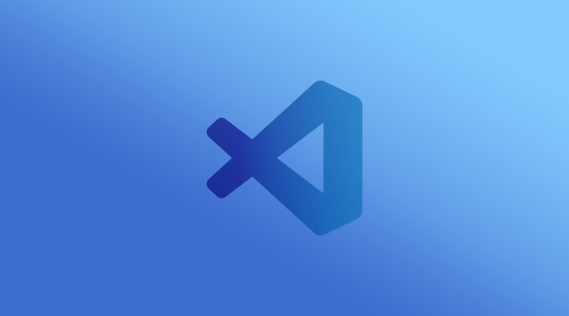

Open Science 101
Discover the transformative world of Open Science and learn how SCHOOL program is empowering researchers and learners to contribute to global challenges through open science.

TOPSTSCHOOL Development Team
Open Science Contributor
Open Science is a global movement that aims to make scientific research more accessible, transparent, and collaborative. At NASA, we’re embracing this transformation through our TOPS [1] initiative, which seeks to democratize scientific knowledge and empower individuals from all walks of life to engage with and contribute to the research process. Open Science is not just a set of practices; it’s a movement that seeks to revolutionize the way research is conducted and shared across the globe. At its heart, open science aims to make scientific research more transparent, accessible, and collaborative. By embracing open science, researchers can accelerate discoveries, increase public engagement, and ensure that science serves humanity more effectively.
The SCHOOL, Science Core Heuristics for Open Science Outcomes in Learning program is an essential part of NASA’s TOPS initiative. It provides a structured, immersive curriculum designed to introduce students, researchers, and science enthusiasts to the core principles of Open Science. Whether you’re just starting out or already well-versed in scientific research, our mission is to help you harness the power of Open Science to drive meaningful change.
What is Open Science?
At its core, Open Science seeks to remove the barriers traditionally associated with scientific research. In contrast to conventional research models — where data, methodologies, and findings are often limited to a select few, Open Science promotes the idea that all aspects of the research process should be openly shared and accessible to everyone.
Openness means…
Sharing Data. Making raw data available for others to use, analyze, and build upon.
Transparent Methods. Sharing methodologies, tools, and software openly to enhance reproducibility.
Open Access. Providing access to scientific publications and research outputs to ensure that knowledge reaches a wider audience.
Open Science promotes transparency, encourages collaboration, and accelerates scientific discovery by allowing others to replicate studies, validate results, and build upon previous work. By adopting Open Science principles, the research community can collectively tackle the world’s most pressing challenges — from climate change and environmental degradation to public health crises and social inequalities.

Venn diagram, created using draw.io [2], illustrates the four pillars of Open Science — Open Access, Open Research, Open Code, and Open Data. These interconnected principles promote transparency, collaboration, and accessibility in research, fostering a more trustworthy and inclusive scientific community.
To put it simply, Open science is an umbrella term that encompasses various practices aimed at making research more transparent and accessible. It covers the entire research lifecycle, from data collection to publishing findings, emphasizing openness and collaboration. You already might be doing open science unknowningly if you are:
Sharing research protocols openly or documenting code used for data analysis.
Publishing in open-access journals or sharing preprint of research articles.
Sharing raw datasets and detailed analysis scripts.
Why Open Science Matters?
The importance of Open Science goes far beyond academia. In today’s interconnected world, scientific challenges are increasingly global and complex. Problems like climate change, environmental justice, and natural disasters demand cross-disciplinary solutions that involve many collaborators. Open Science breaks down silos, enabling diverse teams of researchers, policymakers, and citizens to work together in solving real-world problems.
Reasons why open science is vital
Transparency and Trust. By making research processes visible and open to scrutiny, Open Science enhances trust in scientific findings.
Collaboration Across Borders. Open Science fosters collaboration by removing barriers to information sharing, allowing researchers from across the globe to work together seamlessly.
Faster Innovation. Open access to data and research outputs reduces duplication of effort, speeds up discoveries, and fosters innovation.
Inclusive Knowledge. Open Science ensures that knowledge is not limited to specific groups or regions, promoting equity in access to information and fostering a more inclusive research community.
Four key areas where open science makes a significant impact [3]
Citizen Science Initiatives and Engagement: Open Science allows for greater participation from the public, enabling citizen scientists to contribute to research efforts and engage with scientific discoveries.
Lifesaving Access to Medical and Scientific Information: Open Science ensures that critical medical and scientific information is accessible to everyone, potentially saving lives by providing timely and accurate data.
Democratization of the Scientific Process: By making research accessible to all, Open Science democratizes the scientific process, giving everyone chance to contribute to and benefit from scientific advancements.
Increased Earth Observation Accessibility: Open Science expands access to Earth observation data, allowing more people to monitor and understan our planet.
Cleaner, More Secure Code with More Contributors: Open-source science invites a broader community to contribute to and improve scientific software, leading to cleaner, more secure code.
Long-Term Maintenance Assistance: The open-source model encourages long-term maintenance and support from the community, ensuring that tools and resources remain up-to-date and functional.
New Monetized Offices and Data Centers: Open Science can lead to the creation of new monetized opportunities, such as data centers, that support and enhance scientific research.
Transparent Research Spending: Open Science promotes transparency in research spending, making the allocation of funds more efficient and accountable.
Increased Transparency of Research Results: Open Science makes research results more transparent, allowing for easier verification and replication of studies.
Reliable Results Through Confirmation: The open sharing of data and methodologies enables other researchers to confirm findings, leading to more reliable and robust scientific outcomes.
Reduced Pressure for “Exciting” Research: By focusing on reproducibility and transparency, Open Science reduces the pressure to produce “exciting” results just to get published, fostering a more honest and rigorous scientific process.
More Robust Scientific Products: Open Science enhances the overall quality of scientific research, leading to more trustworthy and impactful results.
International Accessibility: Open Science ensures that scientific knowledge is accessible to researchers around the world, regardless of their location or resources.
Breaking Down Financial Barriers: Open Science helps to dismantle systemic financial barriers, allowing more people to participate in and benefit from scientific research.
Diversity Among Researchers: By making science more accessible, open science encourages greater diversity among researchers, leading to a richer and more inclusive scientific community.
Equitable Distribution of Opportunity: Open Science ensures that opportunities for research and collaboration are distributed more equitably, fostering a more inclusive and diverse scientific environment.
Open Science isn’t just about making research available — it’s about making a difference. By participating in Open Science, you are contributing to a global movement that seeks to democratize knowledge, break down silos, and create a more equitable world. When scientists, researchers, and learners like you come together to share knowledge openly, we amplify our ability to solve complex problems and create a future where science benefits everyone.
Imagine the ripple effect your contributions could have: a dataset you share could lead to a breakthrough in environmental protection, the method you develop could improve public health outcomes, or your insights into climate change could help shape policies that protect vulnerable communities. Open Science allows you to play a part in something far bigger than yourself.
The below video summarizes the importance of Open Science. [4]
Summary and Up Next
By understanding open science, you become a part of a global movement to make research more inclusive, efficient, and impactful. Open science is about breaking down barriers and working together, across borders and disciplines, to create a better, more informed world.
Once you’ve grasped the importance of open science, you’ll be ready to dive into the next section, we’ll introduce you to the software and platforms that can help you implement open science practices efficiently. We’ll cover everything from setting up necessary accounts to configuring IDEs.

